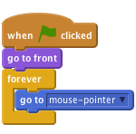
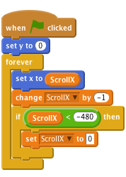
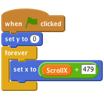
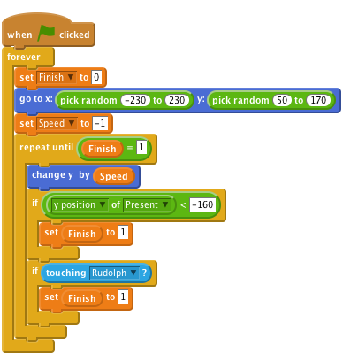
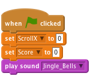
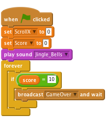
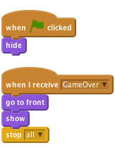

Christmas Capers
Level 2
In this project we’ll create a game with scrolling backgrounds, scoring and a festive game over screen.
A disaster in a toy factory has sent presents flying into the sky, help Rudolf to save Christmas by catching the presents!

Click the green flag and move the mouse, does Rudolph follow the mouse?
ScrollX and make it for all sprites, then uncheck the box next to it to remove
Click the green flag, do the hills move? What happens as the hills move to the side of the screen?

Click the green flag, do the hills move? Has the issue with the flickering trees been fixed?
Data tab and then make a variable. Call it Finish and make it for this sprite only, then uncheck the box next to it to remove it from the stage. This will be used to control when the present should be removed from the game.Speed and make it for this sprite only, then uncheck the box next to it to remove it from the stage. This will be used to control the speed that the present falls down the screen.pick random to make the present appear in a different place each time.touching [ Rudolph ] block we can make the present disappear when touched, we can use this later to keep a score.
Click the green flag, do the presents fall from the sky? Do they disappear when Rudolph touches them or they hit the ground?
change colour block.set Speed to -1 with the pick random block, try different values such as -10 to -1. Your script should now look like this.![when FLAG clicked
forever
set [Finish v] to [0]
go to x: <pick random (-230) to (230)> y: <pick random (50) to (170)
change [color v] effect by <pick random (1) to (-160)>
set [Speed v] to <pick random (-10) to (-1)
repeat until <(Finish) = [1]>
change y by (Speed)
if <([y position v] of [Present v]) < [-160]> then
set (Finish) to [1]
end
if <touching [Rudolph v]?> then
set (Finish) to [1]](a4b32e54490dc7be0b40d56a86e66bcbe3eedb26.png)
Click the green flag, do the presents fall at different speeds and colours?
Score and make it for all sprites. Leave this variable ticked so it appears on the screen.play drum command and also change [ score ] by 1 when Rudolph touches the present.![when FLAG clicked
forever
set [Finish v] to [0]
go to x: <pick random (-230) to (230)> y: <pick random (50) to (170)
change [color v] effect by <pick random (1) to (-160)>
set [Speed v] to <pick random (-10) to (-1)
repeat until <(Finish) = [1]>
change y by (Speed)
if <([y position v] of [Present v]) < [-160]> then
play drum [57 v] for (0.2) beats
set (Finish) to [1]
end
if <touching [Rudolph v]?> then
play drum [39 v] for (0.2) beats
set (Finish) to [1]
change [Score v] by [1]](e8da20aa45c48b99803ee33af082c62a776ed9e8.png)

set score to 0 when the game is started. It will also play Jingle Bells while the game is being played.Note, if at first the music sounds ‘choppy’ save your project, close Scratch and then open your project again.
Click the green flag, does the score change when Rudolph touches a present?
Score reaches 10 we will broadcast a GameOver message.
hide the picture when the game starts and show it when the GameOver message is received.
Click the green flag, does the score change when Rudolph touches a present?
Well done you’ve finished, now you can enjoy the game.
Have a very Merry Christmas!